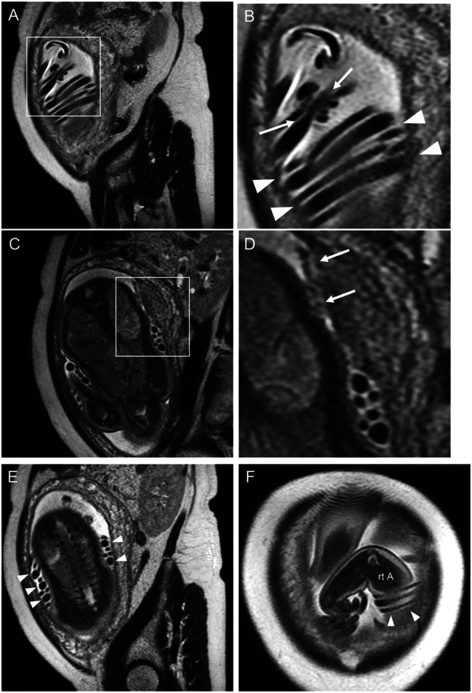
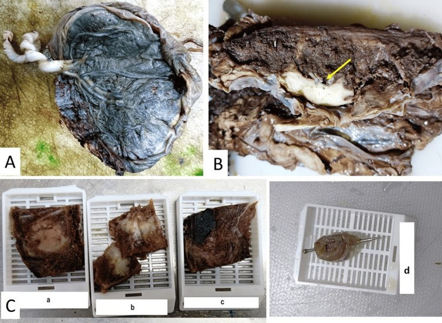
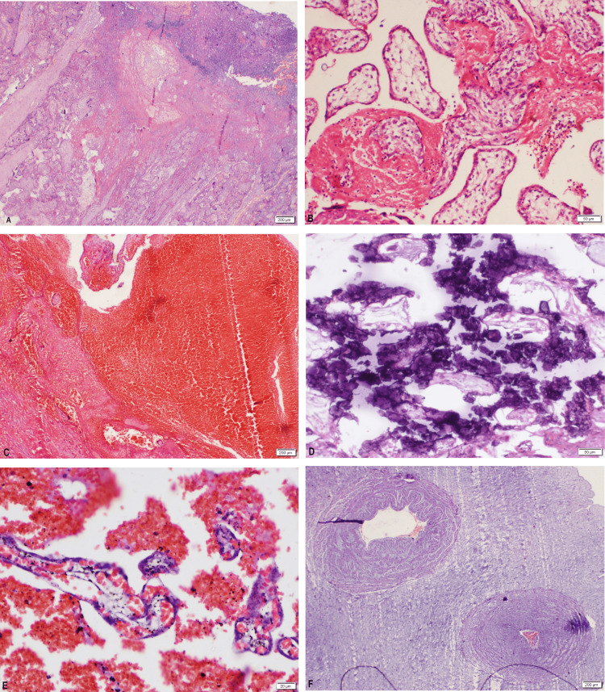

1953 — Thai lưu muộn: quy trình tìm nguyên nhân / Late stillbirth: structured etiologic workup
Tags: pattern:thai-luu pattern:thai-phu pattern:banh-nhau-bat-thuong pattern:day-ron-bat-thuong vung:thai-nhi vung:banh-nhau vung:day-ron protocol:SA-thai protocol:MRI-thai protocol:giai-phau-benh
Mức chắc chắn (certainty): tổng hợp y văn (literature synthesis) — số liệu từ một đoàn hệ 70 thai lưu đủ tháng (PMC12462411), một loạt 50 thai lưu có mô bệnh học bánh nhau (PMC12490432), một tổng quan về rào cản giải phẫu bệnh/di truyền (PMC12456481), một nghiên cứu đa quốc gia CHAMPS với lấy mô tối thiểu (PMC13712675), và một ca MRI thai sau chết (PMC12479237). Các tỷ lệ "giá trị của xét nghiệm" là từ y văn tổng hợp, không phải tỷ lệ dân số.
Câu chốt: Thai lưu không phải một chẩn đoán mà là một biến cố cần truy nguyên — mục tiêu là trả lời "có tái phát ở thai kỳ sau không, và phòng được gì". Ba con số định hình cách làm: (1) nguyên nhân còn không rõ ở 25–40% ngay cả sau đánh giá chuẩn (PMC12479237); (2) bánh nhau có ích trong 65% ca và giải phẫu bệnh thai 42%, nhưng chỉ 21% thai lưu ở Mỹ được mổ tử thi (PMC12456481); (3) trong loạt đủ tháng, 72,9% có bất thường dây rốn và 28,6% là xoắn quá mức (hypercoiling) — nhưng 61,4% vẫn "không rõ nguyên nhân" vì chỉ 47,1% ca được làm mô bệnh học bánh nhau (PMC12462411).
1. Tổng quan bệnh học – cơ chế hình ảnh (TẠI SAO)
1.1 Định nghĩa và vì sao "muộn" quan trọng
- Thai lưu (stillbirth): thai chết trước khi sinh; khác sảy thai (thường < 20 tuần) và chết sơ sinh (sau sinh).
- Ngưỡng tuổi thai không thống nhất: ACOG ≥ 20 tuần, RCOG ≥ 24 tuần, WHO ≥ 28 tuần (dùng cho so sánh quốc tế) (PMC12490432). Vì vậy mọi tỷ lệ phải đọc kèm định nghĩa — đây là cạm bẫy dịch tễ học đầu tiên.
- Toàn cầu ~1,9 triệu thai lưu/năm (PMC13712675), tập trung ở các nước thu nhập thấp–trung bình; 72% ca trong CHAMPS được đánh giá là phòng được (PMC13712675).
1.2 TẠI SAO thai chết: ba tầng sinh lý
- Thiếu oxy – thiếu máu nuôi (hypoxic–ischemic): giảm tưới máu bánh nhau (tiền sản giật, thai chậm tăng trưởng, bong nhau) hoặc dây rốn bị chèn (nút thật, xoắn quá mức, sa dây rốn) → giảm trao đổi khí → toan hô hấp rồi toan chuyển hoá → chết thai.
- Nhiễm trùng: vi khuẩn đi ngược từ âm đạo (GBS, E. coli) hoặc qua máu (giang mai, CMV, parvovirus, Listeria) → viêm màng ối – bánh nhau → thai nhiễm trùng huyết hoặc suy tuần hoàn.
- Bất thường di truyền – phát triển: bất thường nhiễm sắc thể, dị tật tim, bất thường bánh nhau/dây rốn → thai không duy trì được.
- Trong CHAMPS, thiếu oxy trong tử cung chiếm 75% (49% do bệnh mẹ, 33% do bánh nhau), nhiễm trùng bẩm sinh 9%, dị tật bẩm sinh 9% (PMC13712675). Con số này cao hơn các loạt bệnh viện vì CHAMPS dùng lấy mô tối thiểu (MITS) và hội đồng chuyên gia — cho thấy "không rõ nguyên nhân" thường là do thiếu xét nghiệm, không phải do không có nguyên nhân.
1.3 TẠI SAO hình ảnh học lại là mắt xích đầu tiên
- Xác nhận chết thai: tiêu chuẩn là không có hoạt động tim thai trên siêu âm (quét tim thai, M-mode); không dựa vào "thai không cử động" vì thai ngủ có thể im lặng 20–40 phút.
- Dấu hiệu muộn trên siêu âm (chỉ xuất hiện sau vài ngày, không giúp chẩn đoán sớm): phù da đầu (scalp edema), mất tương phản não–sọ, chồng khớp sọ (Spalding sign), bóng khí trong tim/mạch (hiếm), thay đổi tín hiệu do hoại tử.
- MRI sau chết (postmortem MRI) trả lời câu hỏi mà siêu âm và khám lâm sàng bỏ sót: bất thường dây rốn và bánh nhau trong tử cung, trước khi tháo thai. Ca minh hoạ: MRI phát hiện nút thật (true knot), dây rốn xoắn quá ít (hypocoiled) và quấn quanh thân thai; khi sinh, dây rốn đã tự tháo — nghĩa là khám sau sinh sẽ không còn thấy nút (PMC12479237).
- TẠI SAO tín hiệu thay đổi sau chết: hồng cầu ly giải và mô hoại tử làm T2 giảm tín hiệu ở mô đặc (gan, cơ), dịch tự do T2 sáng; không có dòng chảy nên mất tín hiệu mạch (flow void) là bình thường sau chết, không được đọc là "huyết khối". Đây là lý do phải đọc MRI sau chết bằng chuỗi xung T2 nhanh (SSFSE/HASTE) và đối chiếu lâm sàng, không áp tiêu chuẩn của MRI thai sống.
1.4 Giá trị của từng xét nghiệm (con số để tư vấn)
| Xét nghiệm | Giá trị tìm nguyên nhân | Ghi chú |
|---|---|---|
| Mô bệnh học bánh nhau | 65% ca có ích (PMC12456481) | Rẻ nhất, ít xâm lấn nhất — luôn làm nếu có thể |
| Giải phẫu bệnh thai (autopsy) | 42% ca có ích (PMC12456481) | Chỉ 21% ca ở Mỹ được làm; rào cản chi phí, chuyên gia, tâm lý |
| MRI sau chết | Thay thế một phần khi cha mẹ từ chối mổ | Phát hiện dây rốn/bánh nhau, dị tật lớn; không thay thế mô học |
| Di truyền (karyotype/microarray/exome) | Bất thường nhiễm sắc thể là nhóm nguyên nhân quan trọng; exome thêm chẩn đoán ở ca microarray âm (PMC13464710) | Lấy da/cân, không lấy máu (dung giải sau chết) |
| KBT/flow cytometry (FMH) | Phát hiện xuất huyết thai–mẹ | MCA-PSV > 1,5 MoM hỗ trợ thiếu máu thai (bài 1747) |
| Nhiễm trùng | 9% ca trong CHAMPS (PMC13712675) | Cấy bánh nhau, máu thai, huyết thanh mẹ, nước tiểu |
2. Mẫu hình + chẩn đoán phân biệt theo vị trí (gamut)
- Gamut theo cơ quan tổn thương (đọc bánh nhau – dây rốn – thai theo thứ tự):
- Bánh nhau – mạch máu mẹ (maternal vascular malperfusion): nhồi máu, huyết khối khoảng gian nhung mao, bánh nhau nhỏ, bong nhau, nhau tiền đạo, vasa previa.
- Bánh nhau – mạch máu thai (fetal vascular malperfusion): huyết khối mạch thai, nhung mao mất mạch, viêm mạch huyết khối, dây rốn quấn chặt.
- Dây rốn: nút thật, xoắn quá mức (hypercoiling), xoắn quá ít (hypocoiling), bám màng (velamentous), dây rốn ngắn, sa dây rốn, quấn cổ/thân.
- Nhiễm trùng: viêm màng ối – bánh nhau (GBS, E. coli), giang mai, CMV, parvovirus B19, Listeria, Zika.
- Thai – di truyền/dị tật: bất thường nhiễm sắc thể, dị tật tim, thoát vị rốn, phù thai.
- Mẹ: tiền sản giật/THA, đái tháo đường, hội chứng kháng phospholipid (APLS), bệnh tuyến giáp, chấn thương, nhiễm trùng huyết.
- Xuất huyết thai–mẹ (FMH) và bất thường đa thai (TTTS, TRAP, monoamniotic).
- Phân loại theo hình thái thai: tươi (fresh) gợi ý biến cố cấp (sa dây rốn, bong nhau, nhiễm trùng cấp); macerated gợi ý chết ≥ 48 giờ trước sinh, nguyên nhân mạn (thiểu năng bánh nhau, nhiễm trùng kéo dài). Mức maceration không cho biết nguyên nhân, chỉ cho biết thời điểm.
3. Bảng so sánh phân biệt (ma trận đối chiếu)
| Thực thể (entity) | Hình ảnh / mô bệnh điển hình | Chốt vào (rule-in) | Chốt loại (rule-out) | Gợi ý xác nhận |
|---|---|---|---|---|
| Thiểu năng bánh nhau (MVM) | Bánh nhau nhỏ, dày không đều, nhồi máu hình nêm, huyết khối gian nhung mao, thai chậm tăng trưởng, ối ít | Nhồi máu + bánh nhau nhỏ + thai FGR/ối ít | Bánh nhau kích thước bình thường, không nhồi máu → tìm nguyên nhân khác | Mô bệnh học Amsterdam; Doppler ĐM rốn |
| Nút thật / xoắn quá mức dây rốn | Nút thật trên MRI/SA; > 0,3 vòng/cm (hypercoiling); dây rốn phù, huyết khối trong tĩnh mạch rốn | Thấy nút thật + mạch rốn xẹp/huyết khối | Dây rốn thẳng, mạch rốn thông, không nút | MRI sau chết trước sinh; khám dây rốn tươi |
| Nhiễm trùng đi ngược | Viêm màng ối – bánh nhau (bạch cầu trung tính), thai tươi, mẹ sốt/vỡ ối sớm | Mô bệnh viêm màng ối độ 2–3 + cấy bánh nhau dương | Mô bệnh không viêm + cấy âm → ít nghĩ nhiễm | Cấy bánh nhau, máu thai, huyết thanh mẹ |
| Bất thường nhiễm sắc thể | Dị tật đa cơ quan, nang ối/giãn não thất, bánh nhau hạt nho (molar) | Microarray phát hiện bất thường bệnh lý | Microarray bình thường không loại trừ đột biến đơn gen | Microarray + exome; lấy da/cân |
| Xuất huyết thai–mẹ (FMH) | Thai thiếu máu, phù, suy tim; MCA-PSV > 1,5 MoM; KBT mẹ dương | KBT/flow cytometry dương + MCA-PSV tăng | KBT âm + MCA-PSV bình thường → ít nghĩ FMH | KBT sớm sau sinh; siêu âm Doppler MCA |
4. Protocol chụp + hệ phân độ/điểm chuẩn hóa
4.1 Xác nhận chết thai và đánh giá ban đầu (siêu âm)
- Quét tim thai 2 chiều + M-mode, ghi hình ảnh/video; nếu nghi ngờ, hai người đọc độc lập. Không dùng Doppler màu để "tìm dòng" khi tim đã ngừng.
- Đánh giá sinh trắc thai (ước tuổi, cân nặng), lượng ối, vị trí bánh nhau, độ dày/echo bánh nhau, dây rốn (số mạch, bám, có nút), dị tật lớn.
- Tìm dấu hiệu nguyên nhân: bánh nhau dày/nhồi máu, ối ít, thai FGR, phù thai, bất thường dây rốn.
4.2 Bộ xét nghiệm "truy nguyên" (làm càng đủ càng ít "không rõ")
- Bánh nhau → giải phẫu bệnh: gửi tươi (hoặc ngâm nước muối lạnh), không cố định cả bánh nhau trong formol; gửi kèm dây rốn và màng ối. Lấy mẫu theo Amsterdam: ≥ 2 mảnh bánh nhau bình thường + 1 mảnh tổn thương + cuộn màng ối + 2 đoạn dây rốn (PMC12490432).
- Giải phẫu bệnh thai (autopsy) hoặc MRI sau chết: quyết định trong 24–48 giờ để tránh dung giải; tư vấn cha mẹ về giá trị 42% và rào cản tâm lý/chi phí (PMC12456481).
- Di truyền: karyotype + microarray trên da/cân (nguyên bào sợi) — máu sau chết thường không nuôi được; exome nếu microarray âm mà thai có dị tật (PMC13464710).
- FMH: KBT/flow cytometry mẹ + MCA-PSV (ngưỡng > 1,5 MoM) — nối bài 1747.
- Nhiễm trùng: cấy bánh nhau/màng ối, máu thai, huyết thanh mẹ (giang mai, CMV, parvovirus, toxoplasma theo dịch tễ), cấy nước tiểu.
- Mẹ: glucose/HbA1c, APLS (lupus anticoagulant, anticardiolipin, anti-β2GPI — làm lại sau 12 tuần), TSH, tầm soát chất gây nghiện khi có chỉ định.
4.3 Protocol MRI sau chết (khi được chọn)
- 1,5T hoặc 3T, cuộn thân, toàn thân thai + bánh nhau; chuỗi T2 SSFSE/HASTE (nhanh, ít nhiễu), T1, DWI; không cần cản từ.
- Thời gian quét 20–40 phút; đọc cùng bác sĩ chẩn đoán hình ảnh + nhà giải phẫu bệnh; ghi rõ giới hạn: không có mô học, bỏ sót tổn thương < 2–3 mm, thay đổi do dung giải.
- Giá trị thực hành: xác định nút thật, hướng xoắn, bám màng, dị tật lớn — những thứ khám sau sinh có thể đã mất (PMC12479237).
4.4 Lưu đồ quyết định
flowchart TD
A[Thai lưu xác nhận bằng siêu âm] --> B[Đánh giá: tuổi thai, ối, bánh nhau, dây rốn, dị tật]
B --> C[Gửi bánh nhau + dây rốn + màng ối đi mô bệnh]
C --> D{Cha mẹ đồng ý mổ tử thi?}
D -->|Có| E[Autopsy toàn bộ + mô bệnh]
D -->|Không| F[MRI sau chết + chụp X-quang toàn thân]
E --> G[Di truyền: da/cân + microarray]
F --> G
G --> H[KBT/flow cytometry + MCA-PSV]
H --> I[Xét nghiệm nhiễm + APLS + glucose/HbA1c]
I --> J{Hội chẩn đa chuyên khoa}
J -->|Có nguyên nhân| K[Tư vấn nguy cơ tái phát + kế hoạch thai sau]
J -->|Không rõ| L[Vẫn tư vấn theo yếu tố nguy cơ + theo dõi thai sau]
- Tư vấn nguy cơ tái phát: phụ thuộc nguyên nhân — APLS (kháng đông + aspirin), đái tháo đường (kiểm soát đường huyết), bất thường NST (tư vấn di truyền/chẩn đoán tiền sản), thiểu năng bánh nhau (aspirin, theo dõi Doppler). Không có nguyên nhân vẫn cần theo dõi thai chặt hơn ở thai kỳ sau.
5. Biến thể bình thường và cạm bẫy
- "Không rõ nguyên nhân" khi chưa làm mô bệnh bánh nhau: loạt đủ tháng có 61,4% "không rõ" nhưng chỉ 47,1% ca được làm mô bệnh bánh nhau (PMC12462411). Trước khi nói "vô căn", hãy kiểm tra bánh nhau đã được lấy chưa.
- Nút thật có thể tự tháo khi sinh: MRI trước sinh là bằng chứng; khám dây rốn sau sinh bình thường không loại trừ nút thật (PMC12479237).
- Maceration ≠ phù thai: cả hai đều có phù da; phù thai thật có tràn dịch màng phổi/màng tim, bánh nhau dày > 6 cm, ối nhiều; maceration có da nhăn, bong thượng bì, không tràn dịch.
- Lấy máu thai để karyotype sau chết: tế bào không phân chia → thất bại; dùng da/cân hoặc microarray (không cần nuôi cấy).
- Chỉ lấy mảnh nhồi máu: bỏ sót bệnh mạch máu thai và viêm màng ối ở vùng bánh nhau "bình thường" — phải lấy cả mô lành theo Amsterdam.
- Bánh nhau "trông bình thường" không loại trừ bệnh lý: nhồi máu nhỏ, huyết khối gian nhung mao chỉ thấy trên kính hiển vi.
- Đa thai monoamniotic: dây rốn quấn nhau gần như luôn có; không phải mọi ca quấn dây đều do dây rốn — cần loại trừ TTTS/TRAP và bất thường NST.
- FMH bị bỏ sót: thai chết cấp, không rõ nguyên nhân, mẹ thiếu máu → luôn làm KBT và MCA-PSV trước khi kết luận.
6. Tự lượng giá — Blind Quiz
Ca 1 — Thai 33 tuần, không còn cử động 2 ngày, siêu âm xác nhận không có tim thai. MRI sau chết được chụp trước khi khởi phát chuyển dạ.

- Hỏi: Mô tả bất thường dây rốn (A–D). Vì sao khám dây rốn sau sinh có thể bình thường? Điều này thay đổi tư vấn thế nào?
Bấm để hiện đáp án
- Dấu hiệu: (A, B) nút thật (mũi tên) và dây rốn xoắn quá ít, thẳng (arrowheads); (C, D) mạch rốn xẹp phía thai của nút; (E) ba vòng dây rốn quấn quanh thân thai; (F) mặt cắt ngang xác nhận nút.
- Chẩn đoán: thai lưu do bất thường dây rốn (nút thật + hypocoiling + quấn thân thai) — nguyên nhân không thấy trên khám thường quy.
- Vì sao sau sinh có thể bình thường: dây rốn tự tháo khi sinh; MRI trước sinh mới giữ được bằng chứng (PMC12479237).
- Nguồn ảnh: Sone K et al., J Obstet Gynaecol Res 2025 (PMC12479237), Fig. 1 — CC BY-NC 4.0.
Ca 2 — Thai 36 tuần chết lưu, bánh nhau gửi tươi. Ảnh đại thể và cách lấy mẫu:

- Hỏi: (A) màng ối có gì bất thường? (B) tổn thương hình nêm nhạt màu là gì? (C) vì sao phải lấy cả mảnh "bình thường" và mảnh tổn thương?
Bấm để hiện đáp án
- (A) Màng ối nhiễm phân su (meconium-stained) — gợi ý thai đã có biến cố cấp trước chết, không phải nguyên nhân.
- (B) Nhồi máu bánh nhau (placental infarction) — vùng nhạt, hình nêm, đáy ở bản mẹ; tương ứng thiểu năng tưới máu mẹ.
- (C) Mẫu (C) gồm a/b: vùng nhồi máu, c: mảnh ngẫu nhiên, d: cuộn màng ối (Swiss roll) — lấy cả mô lành để không bỏ sót bệnh mạch máu thai/viêm màng ối ở vùng trông bình thường.
- Nguồn ảnh: SR A et al., Cureus 2025 (PMC12490432), Fig. 1 — CC BY 4.0.
Ca 3 — Cùng bánh nhau, tiêu bản vi thể:

Bấm để hiện đáp án
- A: nhồi máu bánh nhau; B: fibrin gian nhung mao; C: xuất huyết sau bánh nhau (retroplacental hemorrhage) — tương ứng bong nhau; D: vôi hóa; E: xuất huyết gian nhung mao; F: một động mạch rốn duy nhất (single umbilical artery).
- Ý nghĩa: nhiều tổn thương cùng tồn tại; "một tổn thương" không đủ giải thích — phải mô tả nhiều lĩnh vực (mạch máu mẹ, mạch máu thai, viêm, phát triển nhung mao) như tổng quan hệ thống khuyến nghị (PMC13158631).
- Nguồn ảnh: SR A et al., Cureus 2025 (PMC12490432), Fig. 2 — CC BY 4.0.
Bài liên quan chéo
- 1747 – Xuất huyết thai–mẹ (FMH) (KBT, MCA-PSV, anti-D)
- 1673 – Truyền máu trong tử cung (thiếu máu thai, MCA-PSV)
- 1746 – Hội chứng gương do phù thai (phù thai, bánh nhau dày)
- 1671 – Ứ máu âm đạo – tử cung ở trẻ vị thành niên
- 1725 – Vỡ ối non tháng trước 24 tuần trên sẹo mổ lấy thai
Ảnh
- 3 ảnh: 2 CC BY 4.0 + 1 CC BY-NC 4.0, nguyên bản, không crop/ghép; nguồn + giấy phép từng ảnh trong
images/CREDITS.md.
Không dùng để chẩn đoán độc lập khi chưa có người hướng dẫn.